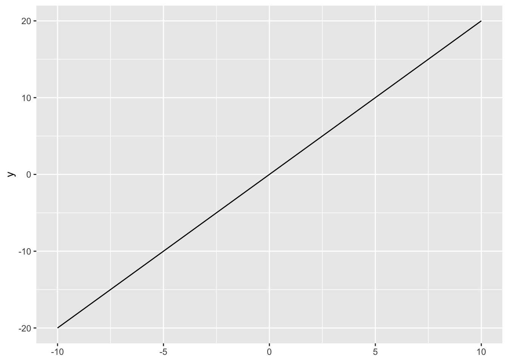
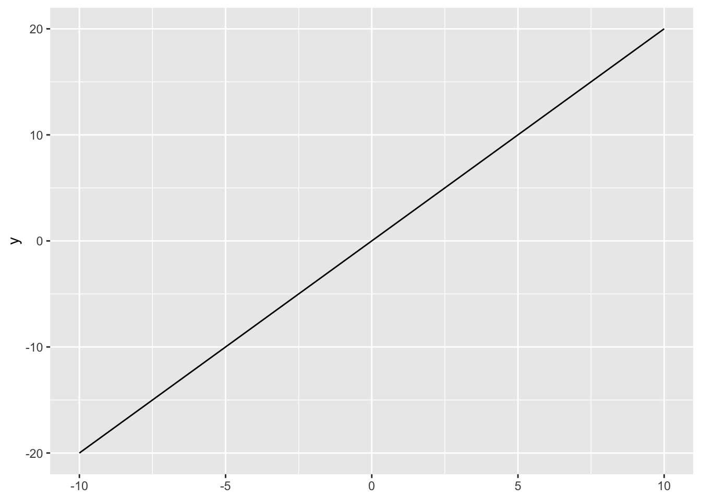
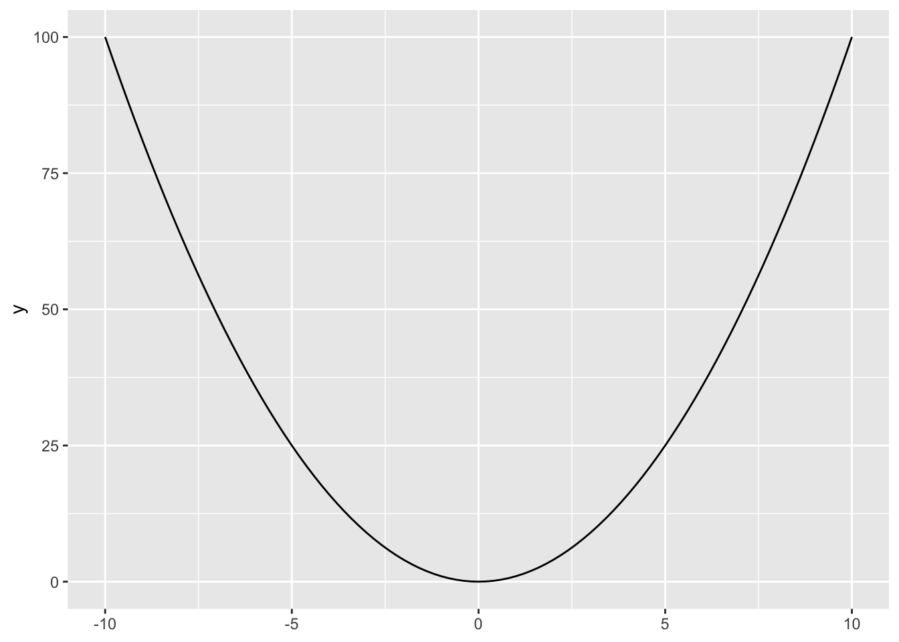
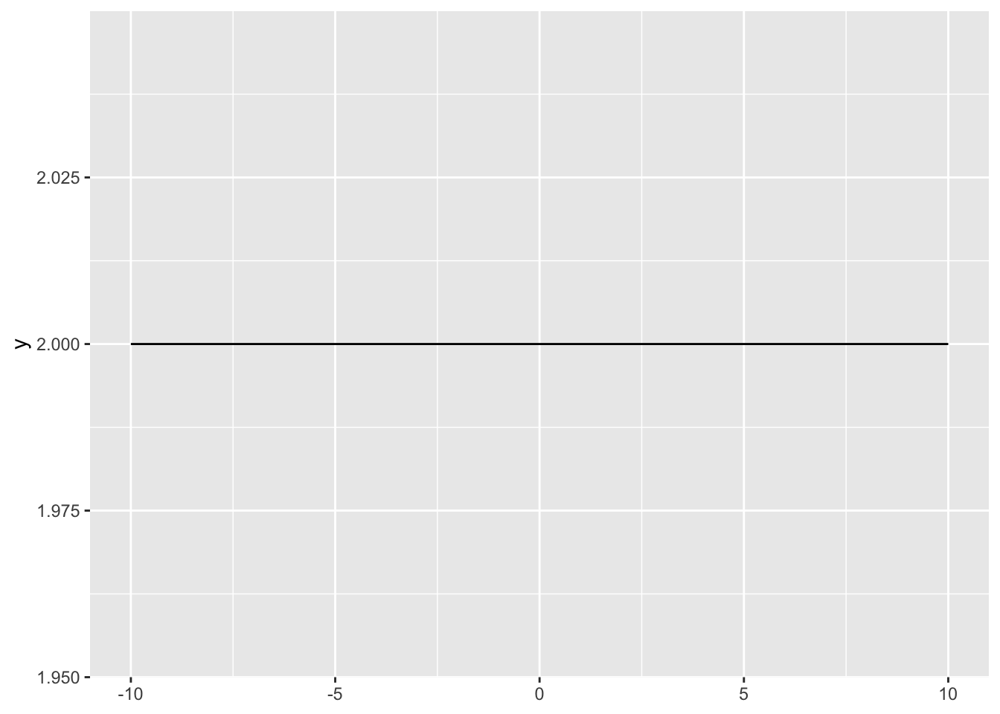
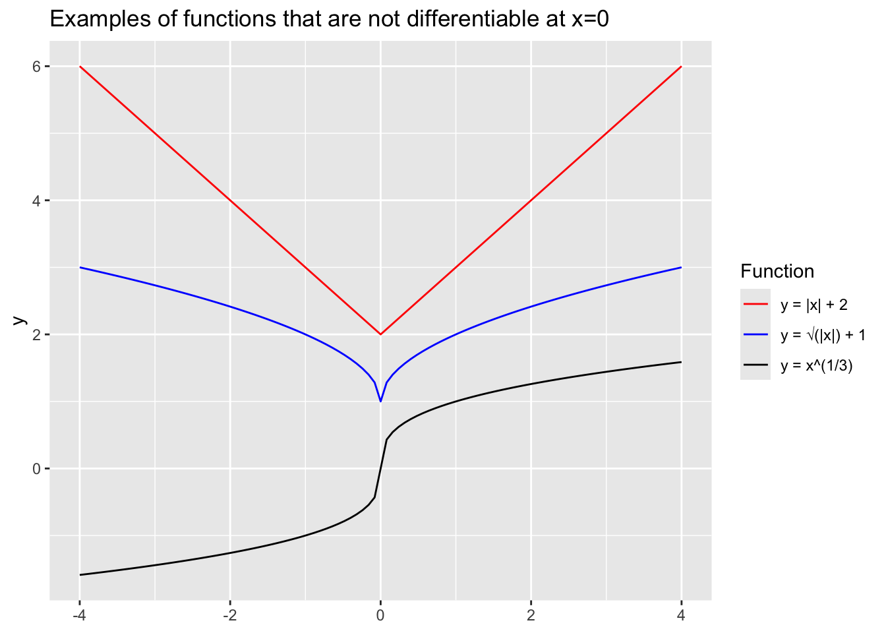
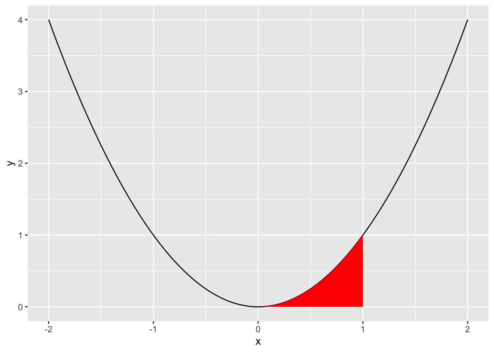

library(tidyverse) # could also just do library(ggplot2)
ggplot() +
stat_function(fun = function(x){2 * x},
xlim = c(-10, 10))
Calculus may be a foreign subject compared to what we have covered so far. Many of us have made career choices to deliberately avoid having to deal with calculus. Still, calculus is important because for computational social science because, at its core, it is about dealing with continuity in a consistent manner.
More often than not we will deal with variables and distributions that are (at least assumed) continuous. Moreover, many single-number quantities of interest in data analysis, like p-values or standard errors, are calculated from continuous distributions (more about this in POLI SCI 403).
Dealing with continuity also means introducing new operations beyond the usual addition, subtraction, multiplication, and division, hence the difficulty. We will take it slow and focus on one at a time. Today is all about derivatives.
Derivatives are about (instantaneous) rate of change.
A helpful way to think about a derivatives is as a slope. Let’s consider a linear function of the form \(y = 2 x\):
library(tidyverse) # could also just do library(ggplot2)
ggplot() +
stat_function(fun = function(x){2 * x},
xlim = c(-10, 10))
We can imagine any political variables in the x- and y-axes. What is the rate of change? In other words, what is the derivative? Remember that we can calculate the slope with
\[ m = \frac{f(x_2) - f(x_1)}{x_2-x_1} \]
which you can remember with the mnemonic “rise over run.”
Now consider another slightly more complicated function, a quadratic one, \(y = x^2\):
ggplot() +
stat_function(fun = function(x){x ^ 2},
xlim = c(-10, 10))
What happens when we apply our slope function?
Here the derivative depends on the value of \(x\). It is actually \(2x\).
Differential calculus is about finding these derivatives in a more straightforward manner. We can generalize our slope formula as
\[ m = \frac{f(x_1+ \Delta x) - f(x_1)}{\Delta x} \]
The point is that when \(\Delta x\) is arbitrarily small, we’ll get our rate of change. Formalizing this:
\[ \lim_{\Delta x\to0} \frac{f(x_1+ \Delta x) - f(x_1)}{\Delta x} = \frac{d}{dx} f(x) = \frac{dy}{dx} = f'(x) \]
A few points on notation:
\(\frac{d}{dx} f(x)\) is read “The derivative of \(f\) of \(x\) with respect to \(x\).” One would be tempted to read \(\frac{d}{dx}\) as a fraction, but it is just here for notation.
The variable with respect to which we’re differentiating is the one that appears in the bottom (in the case above, this is \(x\)).
\(f'(x)\) (\(f\) prime \(x\)) is the derivative of \(f(x)\). This is a more compact form to refer to derivatives when you have defined \(f(x)\) elsewhere.
How to compute derivatives? Sometimes you can try a bunch of numbers and get at the answer. Sometimes you can use the limit-based formula above, if you know a few properties of limits. But in most cases you will either use software (more on this later) or the rules of differentiation, which we will cover now.
Constant rule: \((c)' = 0\).
There is no change in a constant:
ggplot() +
stat_function(fun = function(x){2}, xlim = c(-10, 10))
Coefficient rule: \((c \cdot f(x))' = c \cdot f'(x)\).
ggplot() +
stat_function(fun = function(x){2 * x}, xlim = c(-10, 10), aes(color = "y = 2x")) +
stat_function(fun = function(x){4 * x}, xlim = c(-10, 10), aes(color = "y = 4x")) +
scale_color_manual("Function", values = c("red", "blue"))
Sum/difference rule: \((f(x) \pm g(x))' = f'(x) \pm g'(x)\).
The two rules above give us that the derivative is a linear operator.
Power rule: \((x^n)'=nx^{(n-1)}\)
Remember when we wanted to calculate the derivative of \(y=x^2\) above? We can use the power rule, with \(n=2\)
\[ nx^{(n-1)} = 2x^{(2-1)}=2x \]
\(\;nx^{(n-1)} = 2x^{(2-1)}=2x\).
Let’s try out \(\frac{d}{dx}4x^3\) and \(\frac{d}{dx}(x^2 + 2x)\) on the board.
Here are a few functions to practice the differentiation rules:
Use the differentiation rules we have covered so far to calculate the derivatives of \(y\) with respect to \(x\) of the following functions:
Exponent and logarithm rules:
\[ \begin{aligned} (c^x)' &= c^x \cdot ln(c), & \forall x>0 \\ \\ (log_a(x))' &= \frac{1}{x \cdot ln(a)}, & \forall x>0 \\ \end{aligned} \]
Euler’s number (\(e\)) has interesting properties when it comes to derivatives.
\[ \begin{aligned} (e^x)' &= e^x \\ \\ (ln(x))' &= \frac{1}{x}, & \forall x>0 \end{aligned} \]
Now we’ll get to a couple of more advanced (and powerful) rules.
Product rule: \((f(x)g(x))'=f'(x)g(x) + g'(x)f(x)\)
Quotient rule: \(\displaystyle(\frac{f(x)}{g(x)})' = \frac{f'(x)g(x) + g'(x)f(x)}{[g(x)]^2}\)
Chain rule: \((f(g(x))' = f'(g(x)) \cdot g'(x)\)
We saw call \(f'(x)\) the first derivative, but we can also calculate higher-order derivatives. These are not common in social science data analysis, but they appear in game theory, complex systems, and agent-based modeling.
For example, the second derivative tells us whether the slope of a function is increasing, decreasing, or staying the same at any point \(x\) on the function’s domain. For example, when driving a car:
To calculate higher-order derivatives, you just calculate the derivative using the usual differentiation rules, then calculate the derivative of the output, and so on for however many orders you have. In a college-level calculus course, these can get very crazy during your midterm. In practice, you will rarely lead anything beyond a second derivative.
For example, we can calculate the following second derivative:
\[f''(x) = \frac{d^2(x^4)}{dx^2}\]
First, we take the first derivative \[f'(x)=4x^3\]
Then we use that output to take the second derivative \[f''(x)=f'(4x^3)=12x^2\]
We can keep going… for example, the third derivative is \[f'''(x) = f'(12x^2) = 24x\]
So far, we have worked with derivatives of functions with only one variable. What happens when we have more than one variable that is changing?
Suppose we have a function \(f\) of two (or more) variables and we want to determine the rate of change relative to one of the variables. For a function \(f(x,z)\), we call this a partial derivative
\[ \frac{\partial}{\partial_x}f(x,z) = \frac{\partial_y}{\partial_x} = \partial_x f \]
To obtain a partial derivative, we treat all other variables as constants and take the derivative with respect to the variable of interest (here \(x\)). For example:
\[ \begin{aligned} y = f(x,z) &= xz \\ \frac{\partial_y}{\partial_x} &= z \end{aligned} \]
You can try to do the same for \(\displaystyle\frac{\partial_y}{\partial_z}?\) on your own
Take the partial derivative with respect to \(x\) and with respect to \(z\) of the following functions. What would the notation for each look like?
Not all functions are differentiable at every point of their domains!
An important concept here is whether functions are continuous at a point:
Informally: A function is continuous at a point if its graph has no holes or breaks at that point
Formally: A function is continuous at a point \(a\) if: \(\lim_{x \to a} f(x)=f(a)\)
When is a function differentiable at a point?
If a function is differentiable at a point, it is also continuous at that point.
If a function is continuous at a point, it is not necessarily differentiable at that point.
ggplot() +
stat_function(fun = function(x){abs(x) + 2}, xlim = c(-4, 4),
aes(color = "y = |x| + 2")) +
stat_function(fun = function(x){sqrt(abs(x)) + 1}, xlim = c(-4, 4),
aes(color = "y = √(|x|) + 1")) +
stat_function(fun = function(x){sign(x) * abs(x)^(1 / 3)}, xlim = c(-4, 4),
aes(color = "y = x^(1/3)")) +
scale_colour_manual("Function", values = c("red", "blue", "black")) +
labs(title = "Examples of functions that are not differentiable at x=0")
Informally, functions need to be continuous and reasonably smooth to be differentiable.
In quite a few statistics and machine learning problems, computers need to compute derivatives of arbitrarily complex functions, perhaps millions of times. How do they do it? (see Baydin et al. 2018 for discussion of these three approaches)
Symbolic differentiation: automatically combine the rules of differentiation (power rule, product rule, etc.). It is what math solvers use, e.g., WolframAlpha or (presumably) Symbolab.
Numerical differentiation: infer the derivative by computing the function at different sample values (like we did with \(y=x^2\) before. This is what, for example, R’s optim() function does behind the scenes.
# minimize the x^2 + 5 function:
optim(par = 0, fn = function(x){x ^ 2 + 5}, method = "L-BFGS-B")$par
[1] 0
$value
[1] 5
$counts
function gradient
1 1
$convergence
[1] 0
$message
[1] "CONVERGENCE: NORM OF PROJECTED GRADIENT <= PGTOL"torch R package, the TensorFlow, PyTorch, and JAX Python libraries, and the ReverseDiff.jl and Zygote.jl Julia packages.
Optimization allows us to find the minimum or maximum values (or extrema) a function takes. It has many applications in the social sciences:
Formal theory: utility maximization, continuous choices
Ordinary Least Squares (OLS): Focuses on minimizing the squared errors between observed data and model-estimated values
Maximum Likelihood Estimation (MLE): Focuses on maximizing a likelihood function, given observed values.
On extrema: informally, a maximum is just the highest value a function takes, and a minimum is the lowest value.
In some situations, it can be easy to identify extrema intuitively by looking at a graph of the function.
Maxima are high points (“peaks”)
Minima are low points (“valleys”)
We can use derivatives (rates of change!) to get at extrema.
At critical points (or stationary points), the derivative is zero or fails to exist. At these, the function has usually reached a (local) maximum or minimum.
At a maximum, the function must be increasing before the point and decreasing after it.
At a minimum, the function must be decreasing before the point and increasing after it.
Local extrema occur at critical points, but not all critical points are extrema. For instance, sometimes the graph is changing between concave and convex (“inflection points”). Or sometimes the function is not differentiable at that point for other reasons.
We can find the local maxima and/or minima of a function by taking the derivative, setting it equal to zero, and solving for \(x\) (or whatever variable). This gives us the First-Order Condition (FOC).
\[FOC: f'(x)=0\]
Notice that after this we only know that there is a critical point. BUT we don’t know if we’ve found a maximum or minimum, or even if we’ve found an extremum.
To determine whether a we are seeing a (local) maximum or minimum, we can use the Second Derivative Test:
Start by identifying \(f''(x)\)
Substitute in the stationary points \((x^*)\) identified from the FOC.
\(f''(x^*) > 0\) we have a local minimum
\(f''(x^*) < 0\) we have a local maximum
\(f''(x^*) = 0\) we (may) have an inflection point - need to calculate higher-order derivatives (don’t worry about this now)
Collectively these give us the Second-Order Condition (SOC).
Let’s do this procedure and obtain the FOC and SOC for \(\displaystyle y=\frac{1}{2} x^3 + 3 x^2 - 2\) on the board. What do we learn? Compare this with the plot of the function on Desmos.
Now when it comes to knowing whether extrema are local or global:
Here we use the Extreme value theorem, which states that if a real-valued function is continuous on a closed and bounded (i.e., finite) interval, the function must have a global minimum and a global minimum on that interval at least once. Importantly, in this situation the global extrema exist, and they are either at the local extrema or at the boundaries (where we cannot even find critical points).
So to find the minimum/maximum on some interval, compare the local min/max to the value of the function at the interval’s endpoints. So, e.g., if the interval is \((-\infty, +\infty)\), check the function’s limits as it approaches \(-\infty\) and \(+\infty\).
Let’s try this last step for our example above, \(\displaystyle y=\frac{1}{2} x^3 + 3 x^2 - 2\), to get the global extrema in the entire domain.
Identify the global extrema of the function \(\displaystyle \frac{x^3}{3} - \frac{3}{2}x^2 -10x\) in the interval \([-6, 6]\).
Informally, we can think of integrals as the flip side of derivatives.
We can motivate integrals as a way of finding the area under a curve. Sometimes finding the area is easy. What’s the area under the curve between \(x=-1\) and \(x=1\) for this function?
\[ f(x) = \begin{cases} \frac{1}{3} & \text{for } x \in [0, 3] \\ 0 & \text{otherwise} \end{cases} \]
Normally, finding the area under a curve is much harder. But this is basically the question behind integration.
Let’s say we have a function \(y = x^2\) And we want to find the area under the curve from \(x=0\) to \(x=1\). How would we do this?
ggplot() +
# draw main function
stat_function(fun = function(x){x ^ 2}, xlim = c(-2, 2)) +
# fill area under the curve between x = 0 and x = 1
geom_area(mapping = aes(x = 0), stat = "function",
fun = function(x){x ^ 2}, xlim = c(0, 1), fill = "red")
One way to approximate this area is by drawing narrow rectangles that cover the area in red. Let’s draw this on the board.
Our approximation is rough, but it gets better and better the narrower the rectangles are:
\[ Area = lim_{\Delta x \to 0}\sum_i^n{f(x) \cdot \Delta x} \]
, where \(\Delta x\) is the width of the rectangles and \(n\) is their number.
This is actually one way to define the definite integral, \(\displaystyle\int_a^bf(x)dx\) (also known as the Riemann integral). We’ll learn how to compute these in a few moments.
The indefinite integral, also known as the antiderivative, \(F(x)\) is the inverse of the function \(f'(x)\). \[F(x)= \displaystyle\int f(x) \text{ } dx\]
This means if you take the derivative of \(F(x)\), you wind up back at \(f(x)\). \[F' = f \text{ or } \displaystyle\frac{dF(x)}{dx} = f(x)\]
For example, what is the antiderivative for a constant function \(f(x) = 1\)? Is there just one? (this example comes from Moore and Siegel, 2013, p. 137).
This process is called anti-differentiation. We can use this concept to help us solve definite integrals!
One way to calculate definite integrals, known as the “fundamental theorem of calculus,” is shown below:
\[\displaystyle\int_{a}^{b} f(x) \text{ } dx = F(b)-F(a) = F(x)\bigg|_{a}^{b}\]
First we determine the antiderivative (indefinite integral) of \(f(x)\) (and represent it \(F(x)\)), substitute the upper limit first and then the lower limit one by one, and subtract the results in order.
\(C\) in the following definitions and rules is the called the “constant of integration.” We need to add it when we define all antiderivatives (integrals) of a function because the anti-derivative “undoes” the derivative.
Remember that the derivative of any constant is zero. So if we find an integral \(F(x)\) whose derivative is \(f(x)\), adding (or subtracting) any constant will give us another integral \(F(x)+C\) whose derivative is also \(f(x)\).
Many of the rules of integetration have counterparts in differentiation.
Coefficient rule: \(\displaystyle\int c f(x)\,dx = c \int f(x)\,dx\)
Sum/difference rule: \(\displaystyle\int (f(x) \pm g(x))\,dx = \int f(x)\,dx \pm \int g(x)\,dx\)
Constant rule: \(\displaystyle\int c\,dx = cx + C\)
Power rule: \(\displaystyle\int x^n\,dx = \frac{x^{n+1}}{n+1} + C \qquad \forall n \neq -1\)
Reciprocal rule:\(\displaystyle\int \frac{1}{x}\,dx = \ln(x) + C\)
Exponent and logarithm rules:
\[ \begin{aligned} \displaystyle \int e^x \,dx &= e^x+C \\ \displaystyle \int c^x \,dx &= \frac{c^x}{ln(c)}+C\\ \\ \displaystyle \int ln(x) \,dx &= x \cdot ln(x) - x+C \\ \displaystyle \int log_c(x) \,dx &= \frac{x \cdot log_c(x) - x}{log_c(x)}+C \end{aligned} \]
The final two rules are analog to the product rule and the chain rule:
Integration by parts: \(\displaystyle \int f(x)g'(x)\,dx = f(x)g(x) - \int f'(x)g(x)\,dx\)
Integration by substitution:
\[ \begin{aligned} 1.& \text{ Have }\displaystyle \int f(g(x))g'(x)\,dx \\ 2.& \text{ Set u=g(x)} \\ 3.& \text{ Compute } \int f(u)\,du \\ 4.& \text{ Replace u for g(x)} \end{aligned} \]
Let’s do an example on the board: \(\displaystyle \int e^{x^2} 2x \,dx\).
Remember our function \(y=x^2\) and our goal of finding the area under the curve from \(x=0\) to \(x=1\). We can describe this problem as \(\displaystyle \int_0^1 x^2 dx\)
Find the indefinite integral, \(F(x)\):
\[ \displaystyle\int x^2 \text{ } dx = \displaystyle\frac{x^3}{3}+C \]
Now we’ll use the fundamental theory of calculus. Evaluate at our lowest and highest points, \(F(0)\) and \(F(1)\):
\(F(0) = 0\)
\(F(1) = \displaystyle\frac{1}{3}\)
Technically \(0 + C\) and \(\displaystyle\frac{1}{3} + C\), but the C’s will fall out in the next step
Calculate \(F(1) - F(0)\) \[\displaystyle\frac{1}{3} - 0 = \displaystyle\frac{1}{3}\]
Solve the following indefinite integrals:
\(\int x^2 \text{ } dx\)
\(\int 3x^2\text{ } dx\)
\(\int x\text{ } dx\)
\(\int (3x^2 + 2x - 7\text{ })dx\)
\(\int \dfrac{2}{x}\text{ }dx\)
And solve the following definite integrals:
\(\displaystyle\int_{1}^{7} x^2 \text{ } dx\)
\(\displaystyle\int_{1}^{10} 3x^2 \text{ } dx\)
\(\displaystyle\int_7^7 x\text{ } dx\)
\(\displaystyle\int_{1}^{5} 3x^2 + 2x - 7\text{ }dx\)
\(\int_{1}^{e} \dfrac{2}{x}\text{ }dx\)